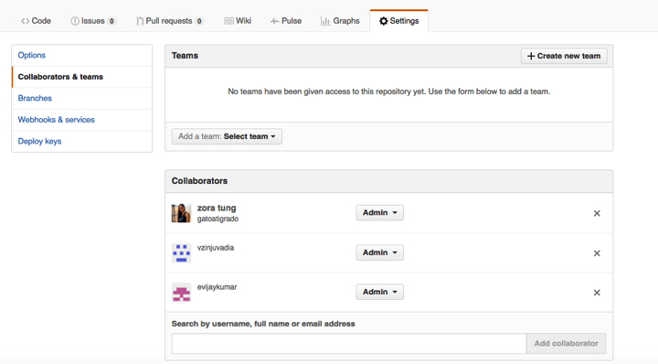
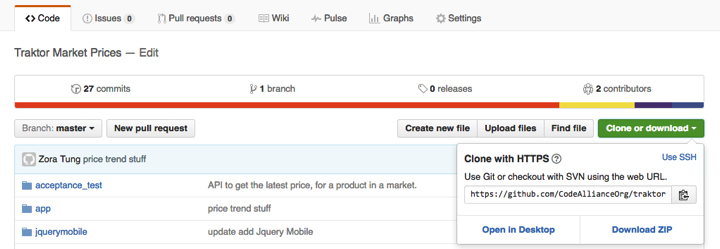
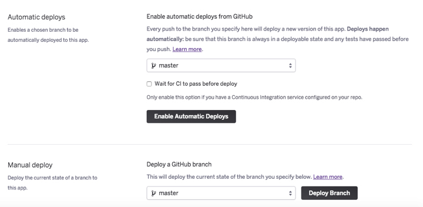

-

- Table of Contents
- Home
- A. Building A Program
- I. GitHub for Version Control
- II. Issues Management Tools
- III. Software Stack Guidelines
- IV. QA Process, Jenkins, Docker
- V. Project Sheets
- VI. Volunteer Feedback Mechanism
- VII. Website Space for Volunteers
- B. Social Good Hack Events
- Types of Events
- Sample Hackathon Schedules
- Marketing and Recruiting
- Volunteer Considerations
- C. Social Good Development Index
- Technical Volunteer Checklist
- Open Source Licenses
- Tech For Good Volunteer Orgs
- Nonprofit Tech Evolution
- Basic Developer Roles?
- Common Open Source Tools
- Tutorial: Basic Deployment
- Tutorial: Hosting a Static Website
- Accessibility Testing Tools
- Why Open Source
- Code Alliance Initiative
- Deep Datta

Tutorial: A Basic Deployment for a Hackathon with Heroku
When you’re at a short-term event, the first thing that helps volunteers is to setup a common developer environment so that everyone is on the same page about where to push code. We prefer GitHub and Heroku.
1. The first thing to do is to create new repository in GitHub and name it after the project. You can give it any name you want, but for this example, we’ll use “project2016”.
2. Next, make sure that everyone on the team has a GitHub account and is made a contributor to the GitHub repository you just created. You add collaborators by going to Settings > Collaborators & teams. You then type in their GitHub username and add them. The default collaborator role is set to “Write” access, but you can also make everyone an “Admin” by clicking on Write and selecting Admin from the drop-down menu.

3. Next, you’ll want to make sure that each collaborator can push code to the repository. If they’re familiar with how to use git on the command line, they’ll know how to do this using the repository URL found under the “Clone or Download” button.

If they are not familiar with the command line on their computer, ask them to download the GitHub for Desktop tool and push changes using it. They can download the tool here: https://desktop.github.com/
Once installed on their local machine, they just clone the repository using the same “Clone or download” button mentioned above. This will open up the repository in their GitHub for Desktop application and will look like a folder (it’s best to place this folder on your Desktop). When changes are made to that folder, the GitHub for Desktop tool will ask you if you want to Sync, commit, and push those changes to the Master branch in GitHub. Get familiar with how this works if you are not.
4. Now that all of your collaborators are using GitHub to make changes, you’ll want to setup your Heroku Deployment environment. Heroku is an online platform that lets users deploy and manage various coding environments in one place. It’s free for non-commercial use.
5. First, make sure you have a Heroku username and password. Anyone who is going to be managing deployments or databases will also want to have access to your Heroku account. If you like using the command line to push changes, download and install the Heroku Toolbelt: https://toolbelt.heroku.com/
*** While you can work without the command line, it’s helpful for developers to have the toolbelt installed.
6. Next, we’re going to create a new Heroku application (or instance) and connect your GitHub account to it. In the top right-hand corner of your Heroku account, you should see a + sign. Click on it to create a new app. Give the app any name you choose, but ideally, it should correspond with the name of your GitHub repository.
7. Once the application is created, you’ll want to click on it from your main Heroku account dashboard. Next, you’ll want to click on “Settings” and scroll down until you see the Buildpack location. Heroku uses “Buildpacks” to tell the application that you’re coding in a specific language. For this tutorial, we want Heroku to know that your code is an HTML/CSS website on GitHub. To do this, we actually deploy a Heroku app with PHP.
For the Buildpack, type in “heroku/php” and click “Add Buildpack”. You should now see the heroku/php buildpack has been added to your Heroku app.
8. Once we connect Heroku up to your GitHub repository, it will look for an index.php file. Most likely, your repository in GitHub is sitting empty. When you’re ready to upload your code to this repository you’ll probably end up having an index.html file. What you’ll want to do is create another file called index.php and place the following snippet of code inside it:
Heroku will now find your index.php file and it will automatically include your index.html code to launch your website correctly. The reason we do this is because Heroku apps cannot find html files automatically. Thus we use this quick method with the php buildpack to launch the code sitting on GitHub.
9. The last step is to actually connect Heroku to your GitHub repository. We do this by going to “Deploy” in your Heroku app and then click on the GitHub picture. This should allow you to connect this specific Heroku application to the GitHub repository you choose from the menu.
10. The last step now that they’re connected is to scroll down on the Heroku app page and actually click on “Deploy Branch”. This will deploy the master branch of the repository to a Heroku URL. The URL is your appname.herokuapp.com. If you clicked Deploy, the Heroku app will build a log box will indicate that it has been launched.

11. Got the URL Heroku just stated and check that you can see your website! Last, you can set automatic deployments on your Heroku App (recommended) by going to the Deploy area again and clicking on “Enable Automatic Deployments”.